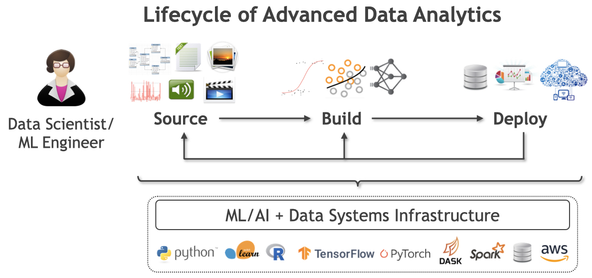

Arun's Data Analytics (ADA) Lab @ UCSD
Introduction
As the scale, complexity, and variety of data grows (aka Big Data), the use of machine learning (ML) and artificial intelligence (AI) techniques to make sense of, and interact with, such data — collectively called predictive data analytics, statistical data analytics, ML-based data analytics, or simply advanced data analytics (also ADA!) — is increasingly critical for data-driven applications in the enterprise, Web, science, and other domains. Alas, building and deploying ML/AI-powered data analytics applications still involves far too many bottlenecks that slow down the lifecycle of such applications, raise costs, frustrate many application users, and in some cases, make high-quality data-driven decision making almost impossible.
The mission of the ADALab is to democratize advanced data analytics by making it dramatically easier, faster, and cheaper to build and deploy ML/AI-powered data analytics applications throughout their lifecycle.
We are an academic research group headed by Dr. Arun Kumar, and we are a part of the Department of Computer Science and Engineering (CSE) at the University of California, San Diego (UCSD). We are members of CSE's Database Lab and affiliate members of the Artificial Intelligence Group and Center for Networked Systems.
Overview of Our Research
The ADA lifecycle typically revolves around data scientists or ML engineers. Based on conversations with dozens of such data-related professionals, we abstract the ADA lifecyle as follows. After identifying the tasks where ML/AI might benefit their application in terms of business impact or scientific insights, the data scientist steers three main processes, as illustrated below:
Data Sourcing: Identify, collect, clean, and organize data in to a form that can be used to train ML models.
Model Building: Perform model selection with the data to obtain desired prediction functions.
Model Deployment: Integrate trained prediction functions with the application and oversee lifecycle.
|  |
The ADALab's approach to democratizing advanced data analytics involves accelerating the ADA lifecyle by removing bottlenecks for both the efficiency of the systems and algorithms involved and the productivity of the data scientists involved.
Towards this grand goal, we synthesize and innovate upon the fields of data management, ML/AI, systems, and human-computer interaction. Our projects target all parts of the ADA lifecycle, and our work spans the whole gamut of building new data systems, algorithms, empirical analysis, and theoretical analysis. All of our systems are released as open source software.
We also enjoy interacting with, and learning from, practitioners — data scientists, ML/software engineers, and domain scientists — and working with them to help them adopt our systems and ideas.
The list of current ADALab projects is here: Projects.
The list of ADALab publications is here: Publications.
Recent ADALab News
New! 02/19: Morgan & Claypool publishes Arun's book Data Management in ML Systems, the first book on the emerging area of ML systems (PDF on M&C webpage; order hard copy).
New! 01/19: Side's paper on a non-linear variant of Morpheus gets a rare direct accept to SIGMOD 2019.
11/18: The Nimbus and Tuple-Oriented Compression papers are both accepted to SIGMOD 2019! I amsterdam and all that.
10/18: Supun, Vraj, and Yuhao present posters about their research at the inaugural SoCal DB Day. Supun also presents a talk about his research at the Fall’18 CNS Research Review.
08/18: A blog post on the panel discussion moderated by Arun at SIGMOD DEEM Workshop 2018 is now live on the ACM SIGMOD Blog.
08/18: The SLAB paper is accepted to VLDB 2018 (or 2019?). Hit your ML system with SLAB to prove it is worthy.
Full list of lab news items here: News.
Members
Faculty
 |
Arun Kumar |
Graduate Students
 |
Supun Nakandala |
 |
Vraj Shah |
 |
Yuhao Zhang |
Undergraduate Students
Kevin Yang
BS, CSE, UCSD
Email: khy009 [at] ucsd [dot] edu
Alumni
Lingjiao Chen. MS, UW-Madison, 2018.
Side Li. BS, CSE, UCSD, 2018.
Anthony Thomas. MS, CSE, UCSD, 2018.
Mingyang Wang. MS, CSE, UCSD, 2017.
Sponsors
We thank the following organizations for their generous support of our research. Any findings or opinions expressed in our research publications or articles are our own and do not necessarily reflect the views of any of these organizations.
 |
Past sponsors: Google, NVIDIA, and Opera Solutions.
About our Lab's Name
Apart from being a convenient acronym, it is also a tribute to Ada Lovelace, widely regarded as the first computer programmer. This tribute is part of our lab's commitment to help foster a diverse and inclusive community in computing, as enshrined in the UCSD Principles of Community, for people from all backgrounds, including women, under-represented minorities, and LGBTQ+ people.